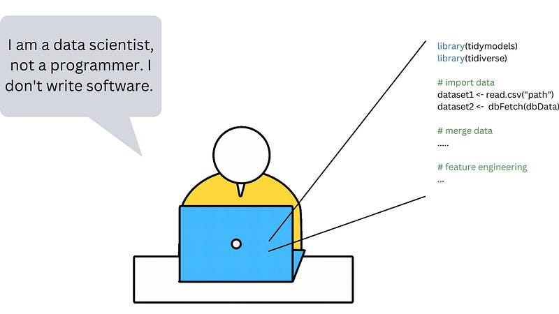
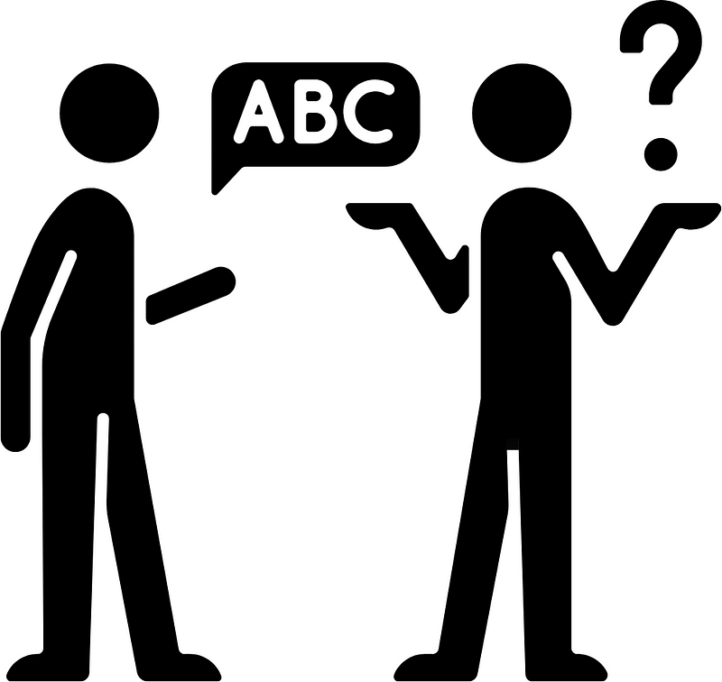
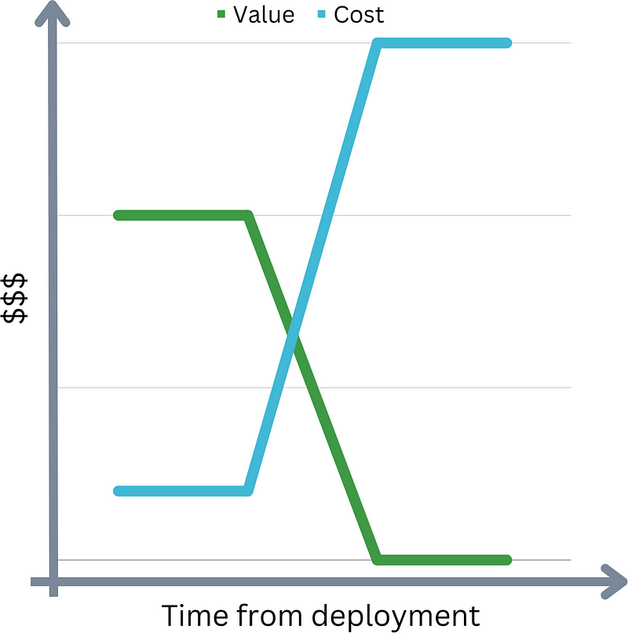

If I had a penny for every time I heard that…
And to double that already very large sum: if I had a penny for every time I heard (usually a few months after the above): “We cannot understand our code anymore. What can we do?”…
Today we’ll analyze that opening statement, and we’ll see if there is truth in it.
But before we do, I’ll tell you about my background, so you will know where my point of view comes from.
Who Am I?
I am not a formally educated software developer. I do not have a background in computer science. I come from a more “analytical” background. I started out as a self-taught coder in Academia. Let’s just say that the code I was writing was not up to any standard whatsoever…
I then spent most, if not all, of my post-Academia career consulting data analysts on how to put together their code. I was lucky enough to do this while working for a company with a strong pedigree in software development. They taught me how to bridge the gap between data analysts and software engineers. And they taught me why it is important to do that.
Now that you know where I come from, let’s analyze a few supporting statements to our opening hypothesis that good practices are not enough.
“We are data analysts, not software developers”

Let’s start by defining who a professional is. We can use Uncle Bob’s first commandment for professionals, which albeit a bit crude is very effective:
[As professionals] we will not ship s**t.
What does this mean? It means that we take pride in our work. Every aspect of it. If we are wedding photographers, we don’t take great photos and then print them on poor-quality paper because “we are photographers, not publishers”.
So, why is this important? Analysts and developers are different professions. And that’s OK. Each professional figure should keep its domain expertise.
But guess what? Both professionals write code. The difference between the two is the extent and depth of the knowledge they need to have. Of course, a data analyst should not worry about having to configure a virtual machine, or set up a DevOps pipeline. However, as a professional, a data analyst should make sure they do not ship s**t. The code they produce should be of satisfactory good standard.
And how do you not ship s**t? By following good practices.
“Good practices slow us down”
True. Initially.
To learn to code professionally is like learning to ride a bike. While you learn how to ride a bike you are not going any faster than walking. But once you mastered it, biking became way faster than walking. You will naturally use the pedals and the handlebars and balance without having to think about it. You can focus on the journey and where you have to go, not the details.
Coding is the same. You will need to put some work in to learn the basics. But when you do and they become second nature, your work will improve in both pace and quality.
And what are those basics? Yes, of course, syntax and libraries. But unless you plan to code just for yourself and your own pleasure, good practices as well. Learn the best tools to collaborate with others, and to make your work faster and more efficient. Learn your IDE.
The best way to learn all these things is by starting to use them from day zero until they become second nature. At that point, you will not lose any time setting up a virtual manager, a repository, or whatever you might need.
“I understand my code very well as it is now”

Good for you. But guess what? You are not working on your solo project anymore. You are working for an organization, for a team.
What if you move on to a different organization? Will the new developer be able to use your code? Your code will need to be shared with other people. If you are a professional and want to keep your reputation high, your code should be in a state that other people can use it and change it.
How do you keep your code usable and understandable? You guessed it: good practices.
“My code brings value to the organization as it is now”

I don’t doubt that. Clever analysts produce very insightful reports and models.
But there is a catch. Your code brings value today, right now. What if next year you need to make changes so that your code continues to add value? Will it be an easy task, or will you have to rewrite the entire thing because you don’t remember how the code works and you left nothing behind that can help you? If you are a professional, you should care about these things. And by now you know how to achieve this goal: good practices.
“I am only learning a quick thing”
When you learn something new you usually want to do so with the lowest amount of overhead possible. You want to be able to focus on the technique itself, and not on additional complications.
For this reason, several people I have worked with in the past 10 years completely forget about good practices. Let me just bring you a few counter-points:
- You might want to refer to this training in the future: adding documentation and saving it in a repo will help you do that.
- You might want to share the training with the rest of your team. Using things like an environment manager will make this a lot easier.
- You might want to make sure that your training topic works with the best practices used in your team.
There is also another aspect to consider. Good coding practices are a habit, not just a tool you take out of a toolbox when needed. And as James Clear told us in his book Atomic Habits, it is key to repeat an action as many times as possible for it to become a habit.
Conclusion
I prefer a piece of well written code that does not work to a piece of crappy code that does work. — Uncle Bob
As you might have guessed, I strongly believe that good practices are not optional. They are fundamental, and an essential part of the work of a professional, as opposed to a cowboy coder working for himself.
Where does this idea that good practices are not for data analysts come from? I think some analysts are confused by what good practices are. Of course we don’t want analysts to worry about advanced programming tools and techniques. Bonus points if they do, but this is not the main concern. The good practices I talk about here are basic concepts like:
- Use version control.
- Use some way to record your dependencies (renv, virtualenv).
- Use a readme file for the repository.
- Comment and document your code, ideally using the language standard (roxygen2, docstring).
- Organise your code base in sensibly named functions.
- Don’t dump all your code in a single massive file.
- Try to make small functions.
If you follow at least those basic principles and you need to pass your code to someone else, that someone else will be very grateful. I was when it happened to me. So if you don’t want to use good practices as a programmer, use them as a decent human being and team player.